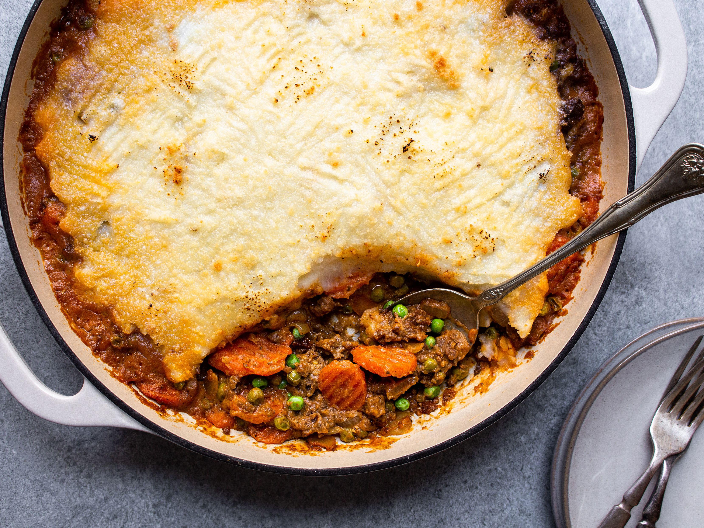

Shepherd's Pie
Servings: 4
Calories: 865
Prep Time: 65 mins

Ingredients
- 3 large potatoes (peeled and quartered)
- 1 1/2 cup butter
- 1 medium onion (chopped)
- 1 1/2 cups vegetables
- 1 1/2 pounds ground beef
- 1/2 cup beef broth
- Salt, pepper, other seasonings to taste
Instructions
- In a medium sized pot, add at least an inch of water and bring it to a boil. Add potatoes and cook until tender.
- Melt around half the butter in a large skillet over medium heat. Add the onions and cook until tender.
Add the rest of the veggies and cook for up to six minutes. - Add the ground beef to the skillet and cook until no longer pink. Apply seasonings as you like.
Add the beef broth, reduce to a simmer, and continue cooking the meat for 10 minutes. - When your potatoes are finished, empty the potatoes into a bowl with the remaining amount of butter.
Mash with a potato masher and apply seasonings as you like. - Preheat the oven to 400 degrees Fahrenheit and spread the beef and vegetable mixture into a baking dish. (9 x 13)
On top of this, spread your mashed potatoes. - When the oven is ready, carefully place your baking dish inside. Cook for at least half an hour before
taking it out and serving.